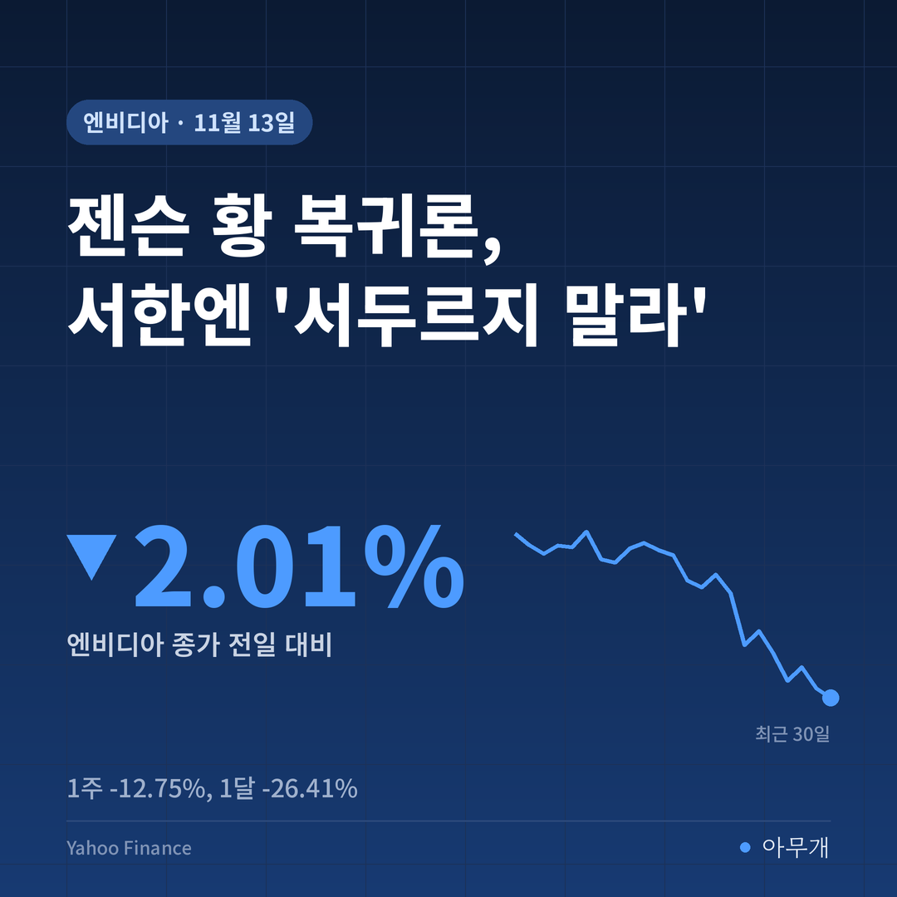
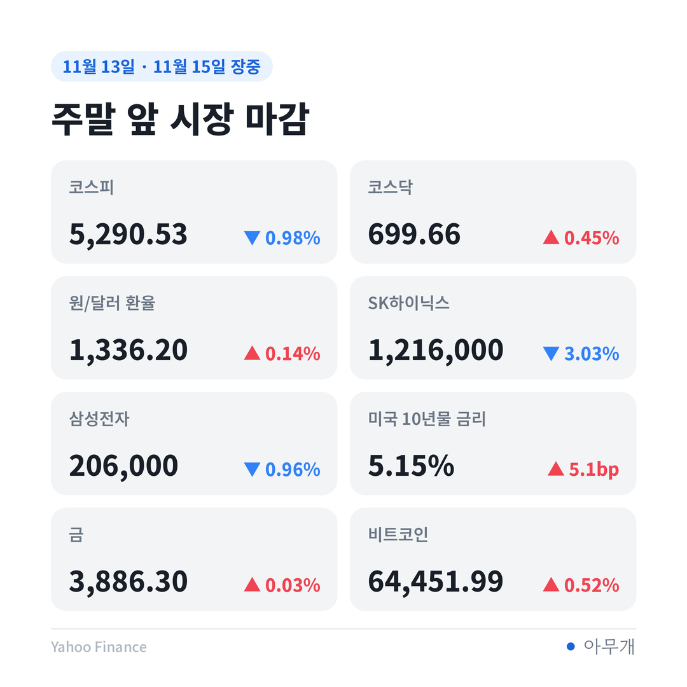
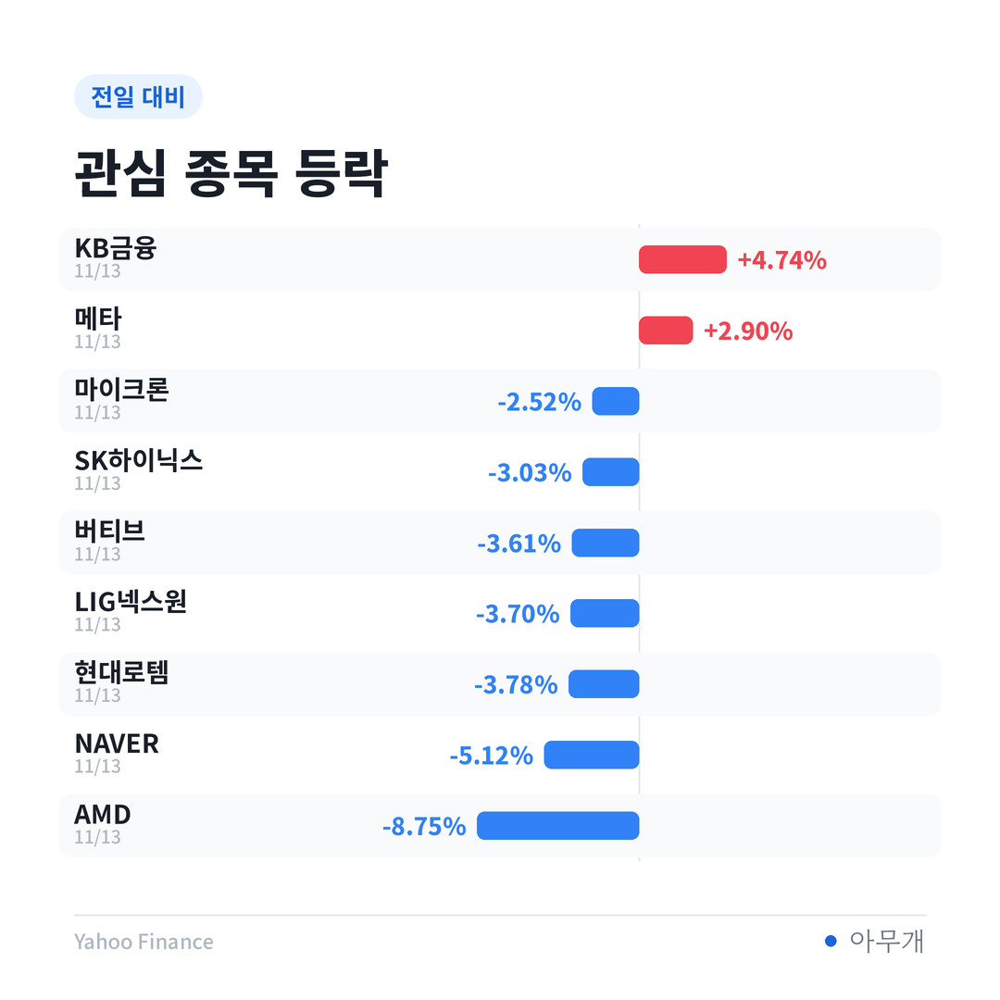

사진·영상 넣기 (본문 순서대로)
📷 사진 1

▲
📷 사진 2

▲
📷 사진 3

▲
📷 사진 4

▲
📷 사진 1 자리
서한에 적힌 문장, 빠진 문장
주말 사이 국내 기사 제목은 대부분 '젠슨 황 복귀 요구'였어요. 서한을 쓴 사람은 알티미터 캐피털의 브래드 거스트너이고, 아트레이디스의 개빈 베이커가 함께 서명했어요[1].
📷 사진 2 자리
서한의 요지는 리더십 문제를 "느리고 신중하게" 다루고, 사실관계가 다 드러나기 전에 후임을 서둘러 앉히지 말라는 것이에요. 검토할 선택지 안에 '황의 복귀 가능성'을 넣었을 뿐, 당장 돌려 놓으라는 문장은 없어요[1]. 오히려 크레스 임시 CEO가 회사를 잘 이끌 것이라고 적었어요.
같은 주말 일론 머스크는 복귀 청원에 서명했다고 밝혔고, 황이 없으면 핵심 거래를 잃을 것이라고 썼어요[1][2]. 국내에서는 박현주 미래에셋 회장도 청원에 동참했다는 단독 보도가 나왔어요[3]. 청원 측은 서명자가 10만 명을 넘고 그중 직원이 5,000명 넘는다고 주장해요[1]. 서명자 수는 매체마다 달라 청원 측 주장으로만 봐야 해요.
| 구분 | 내용 | 성격 |
|---|---|---|
| 대주주 서한 | 신중한 절차, 복귀도 선택지에 포함[1] | ✅ 원문 확인 |
| 머스크 | 청원 서명, '핵심 거래 잃을 것'[1][2] | ✅ 본인 게시글 |
| 청원 규모 | 10만 명 넘게, 직원 5,000명 넘게[1] | 🗣️ 청원 측 주장 |
| 후임 후보 | 리네이 하스 Arm CEO 접촉 보도, 이안 벅 부사장 거론[4] | 🗣️ 외신 보도, 이사회는 공식 접촉 부인 |
| 앨리스 황 | 중국 정보기관 연계[1] | ⚠️ 의혹, 미 법무부가 메가스피드 조사 중 |
나흘 만에 돌아온 CEO가 있었다
창업자 복귀론이 낯설지 않은 건 2023년 11월 오픈AI 때문이에요. 이사회가 샘 올트먼을 해임했지만, 직원 대다수가 사퇴를 압박하는 서한에 서명하면서 나흘 만에 복귀가 합의됐어요[6][7]. 그때는 올트먼을 내보낸 이사회가 물러나고 새 이사회가 꾸려졌어요[6].
| 비교 | 2023년 오픈AI | 2026년 엔비디아 |
|---|---|---|
| 물러난 방식 | 이사회 해임[6] | 본인 사임, 이유 미공개 |
| 압박한 쪽 | 직원 대다수[6][7] | 대주주 펀드 두 곳, 온라인 청원[1] |
| 회사 형태 | 비상장 | 상장사, 미 의회·법무부 조사 연결[1] |
| 결과 | 나흘 만에 복귀[6] | 17일 실적 발표 전후가 첫 고비[4] |
가장 큰 차이는 사임 사유가 회사 안에서 끝나지 않는다는 점이에요. 메가스피드의 칩 우회 의혹은 법무부가 보고 있고, 상원 은행위원회는 12월 10일 러트닉 상무장관과 황 전 CEO를 함께 부르려 해요[1]. 이사회가 복귀를 검토하려 해도 이 일정이 끝나기 전에는 결론을 내기 어려운 구조예요.
복귀론보다 무거운 숫자
엔비디아는 13일 162.85달러(-2.01%)로 마감했어요. 10월 6일 종가 239.24달러와 비교하면 -31.93%예요. 이날 시가총액 4조 달러 선도 깨졌어요[5].
📷 사진 3 자리
서한에 서명한 펀드의 계산서도 가벼워졌어요. 알티미터는 6월 30일 기준 940만 주, 약 19억 달러어치를 갖고 있었어요[1]. 같은 수량을 지금도 갖고 있다면 13일 종가로 약 15억3천만 달러예요. 아트레이디스의 120만 주도 약 2억5천만 달러에서 약 1억9천5백만 달러로 줄어든 셈이에요[1]. 서한이 '서두르지 말라'고 한 배경에는 이런 숫자도 있어요.
주가만의 문제도 아니에요. 연준은 13일 낸 금융안정보고서에서 S&P 500의 12개월 선행 PER(주가수익비율)이 역사적 중간값을 크게 웃돌고, 주식 위험 프리미엄은 바닥권이라고 평가했어요[5][9]. 실적이 기대에 못 미치면 조정이 커질 수 있다는 경고예요. 미국 10년물 금리도 5.154%로 1주 사이 +29.5bp 올라 있어요.
국내 반도체 계좌에서 보면
지난주 외국인은 코스피에서 삼성전자를 1조2,393억원 순매수하고 SK하이닉스는 1조695억원 순매도했어요[5]. 같은 반도체라도 엔비디아 뉴스에 반응하는 방향이 갈린 한 주였어요.
13일 SK하이닉스는 1,216,000원(-3.03%), 삼성전자는 206,000원(-0.96%)으로 끝났어요. 1달로 보면 각각 -14.31%, -11.21%예요. 엔비디아 실적 발표는 한국 시간으로 18일 아침이라, 국내장은 16~17일 이틀을 숫자 없이 버텨야 해요[4][8].
📷 사진 4 자리
같은 주 19일에는 앤트로픽이 나스닥에 상장해요. 공모가 희망 범위는 70~78달러이고, 상단이면 기업가치가 1조200억 달러예요[4]. AI 기업 가치를 시장이 얼마로 매기는지 엔비디아 실적 이틀 뒤 한 번 더 확인하는 셈이에요.
17일 밤 들을 세 문장
월가 전망치는 3분기 매출 1,092억 달러, 조정 EPS(주당순이익) 2.48달러예요. 1년 전보다 각각 91%, 30% 늘어난 숫자예요[4]. 시장이 기다리는 건 이 숫자보다 크레스 임시 CEO의 말이에요.
| 시나리오 | 무엇을 보면 되나 | 예상되는 영향 |
|---|---|---|
| 후계 일정 제시 | 정식 CEO 선임 시점·절차를 숫자로 밝히는지[4] | 서한이 요구한 '신중한 절차'와 맞아 불확실성이 줄 수 있음 |
| 복귀 여지 언급 | 이사회가 '모든 선택지'를 공개적으로 인정하는지[1] | 단기 반등 재료가 될 수 있지만 의회 일정과 부딪힐 수 있음 |
| 답 없이 실적만 | 전망치 1,092억 달러[4]를 넘어도 후계 언급이 없을 때 | 실적보다 경영 공백이 더 길게 주가에 남을 수 있음 |
서한 원문을 읽고 나니 '복귀론'은 사실 '시간을 벌자'는 말에 가까워 보여요. 대주주도 당장 돌아오기 어렵다는 걸 알기 때문에, 서둘러 외부 인사를 앉혀 회사 방향이 흔들리는 걸 먼저 막으려는 것 같아요. 그래서 17일에는 실적표보다 크레스의 후계 일정 한 문장이 더 중요하다고 봐요.
✍️ 직접 보거나 들은 경험이 있으면 위 문단에 한두 줄 덧붙이세요 (이 안내 줄은 지우기)
반대로 보면, 이사회가 시간을 끌수록 리더십 공백이 길어진다는 시각도 있어요. 황은 2인자 없이 임원 60명 안팎에게서 직접 보고를 받아 왔다고 알려져 있어[5], 임시 체제가 길어지면 고객사 협상이 느려질 수 있어요. 머스크가 말한 '잃을 거래'도 바로 이 공백을 가리켜요[2].
수요일 아침까지 달력에 적을 것
참고한 기사
이 글은 정보 제공 목적이며 투자 권유가 아닙니다. 투자 판단과 책임은 본인에게 있습니다.
수치 출처: Yahoo Finance(시장 숫자), LSEG(실적 전망, 연합뉴스 인용), 미 연준 금융안정보고서(연합뉴스 인용)


